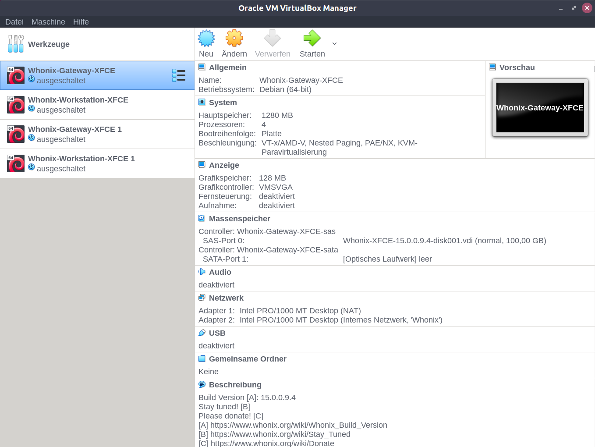
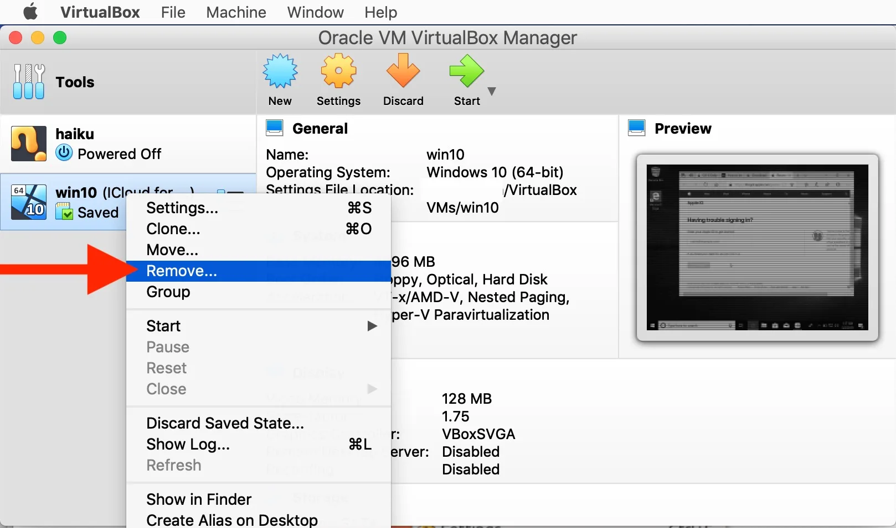

Uninstall Whonix
A step-by-step guide to uninstalling Whonix.
Removing Whonix
From time to time, users inquire about the process of uninstalling
Whonix, possibly as a precursor to a
 Factory Reset (reinstallation).
Factory Reset (reinstallation).
Here's how to uninstall Whonix:
Note: The following instructions are generic, not unique to Whonix. They pertain to typical operations associated with virtualization software, and no additional steps are specifically required for Whonix.
1.Remove the Whonix VMs.
You can simply delete the VMs you wish to remove using the virtual machine manager graphical user interface (GUI).
Select your platform.
VirtualBox
Start Oracle VM VirtualBox Manager.
Figure: Whonix in Oracle VM VirtualBox Manager
Note: Screenshots might look slightly different.

Right-click on a VM name.
Figure: VirtualBox delete VM
Note: VM names will look different than in the screenshot.

2.Uninstall the virtualization software.
Optional.
The method for this varies based on your host operating system. It is unspecific to Whonix and should be done according to the Self Support First Policy.
VirtualBox
Uninstall VirtualBox.
sudo apt-get remove --purge virtualbox*
Optional.
Delete group vboxusers and vboxsf.
sudo groupdel vboxusers
sudo groupdel vboxsf
KVM
3.Remove virtualizer related files.
Optional.
VirtualBox
- File in the user home folder that can be considered for deletion
(installer) (VirtualBox VMs folder):
VirtualBox VMs- But the user should be careful if any non-Whonix VMs were used. These are stored in the same folder.
- Hidden folder in the user home folder that can be considered for
deletion (VirtualBox settings folder). Note, do NOT delete the folder
".config/VirtualBox" if all you want to do is uninstall Whonix but keep
VirtualBox on your computer :
.config/VirtualBox- Similar to above.
- Folder
.configis a "hidden folder". Many file managers do not show hidden folders by default. This can usually be adjusted in the settings of the file manager.
- VirtualBox documentation: Where Oracle VM VirtualBox Stores its Files
KVM
Qubes
4.Remove installer related files.
Optional.
VirtualBox
Only applicable if the user has used Whonix for Linux Installer.
- File in the user home folder that can be deleted (installer
program):
whonix-lxqt-installer-cli - Folder in the user home folder that can be deleted (installer
downloaded files and logs folder):
dist-installer-cli-download
KVM
Qubes
5.Completion.
At this point, the uninstallation process is complete.
See Also
 Factory Reset
Factory Reset